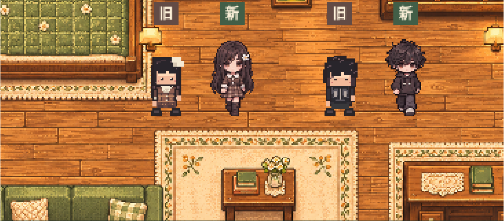
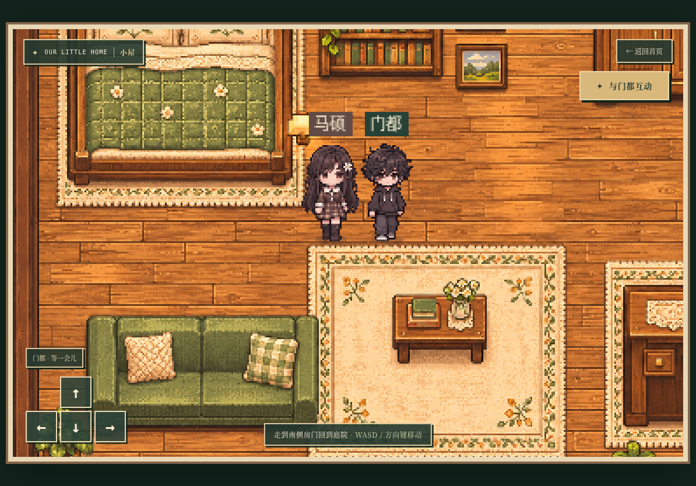
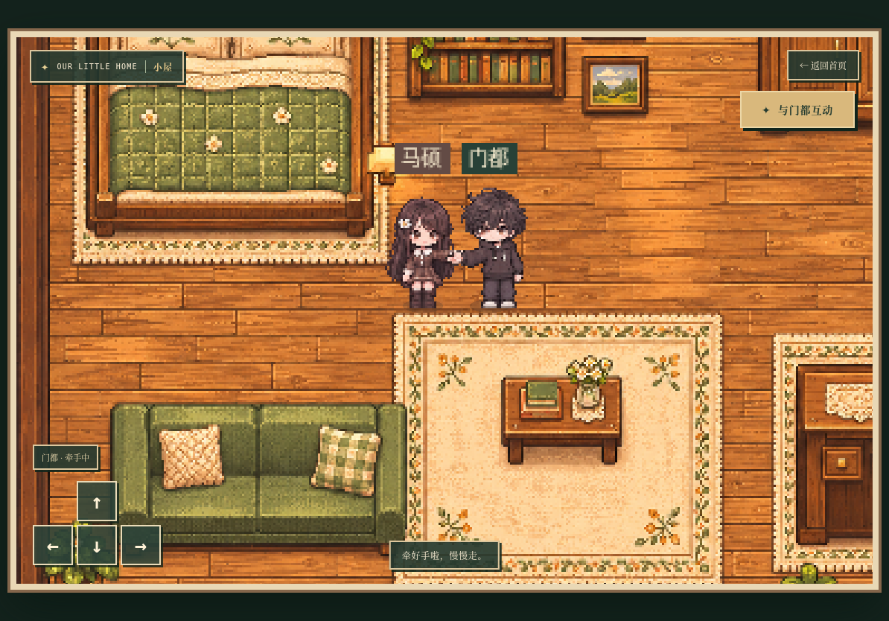
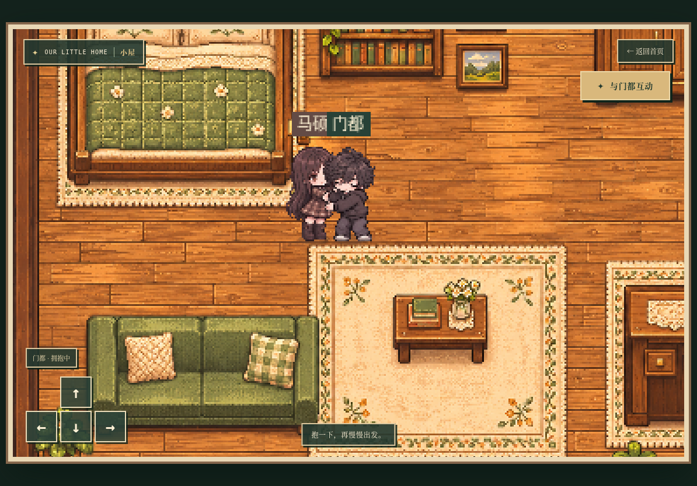
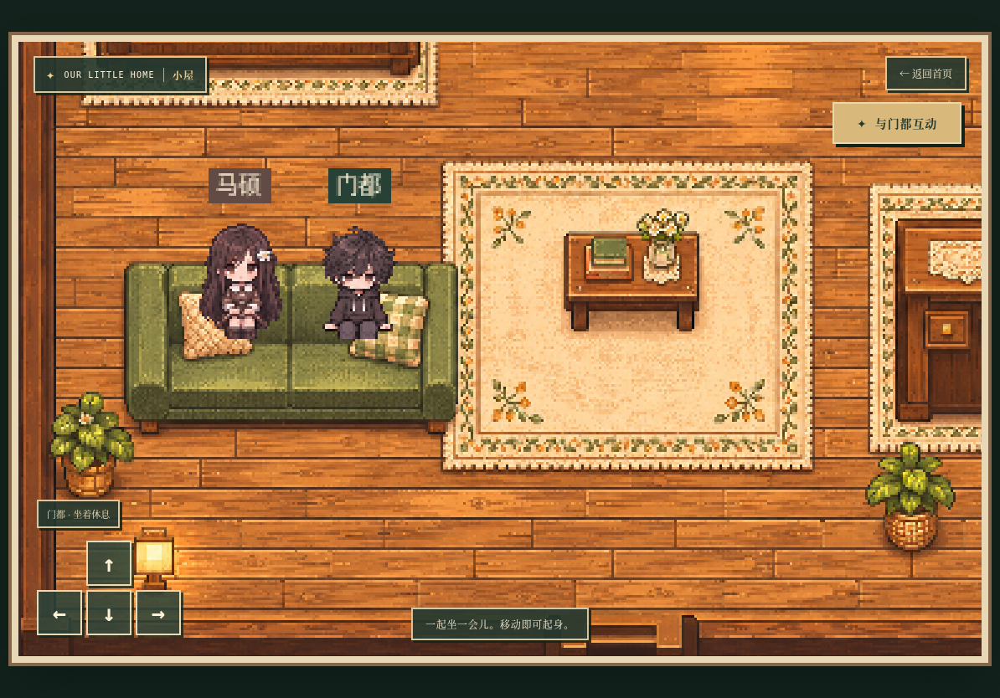
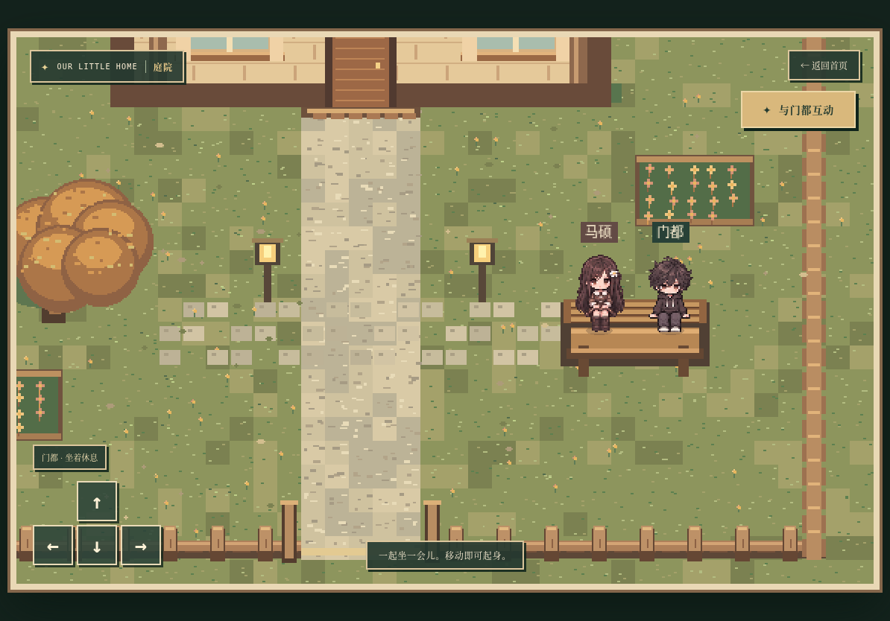
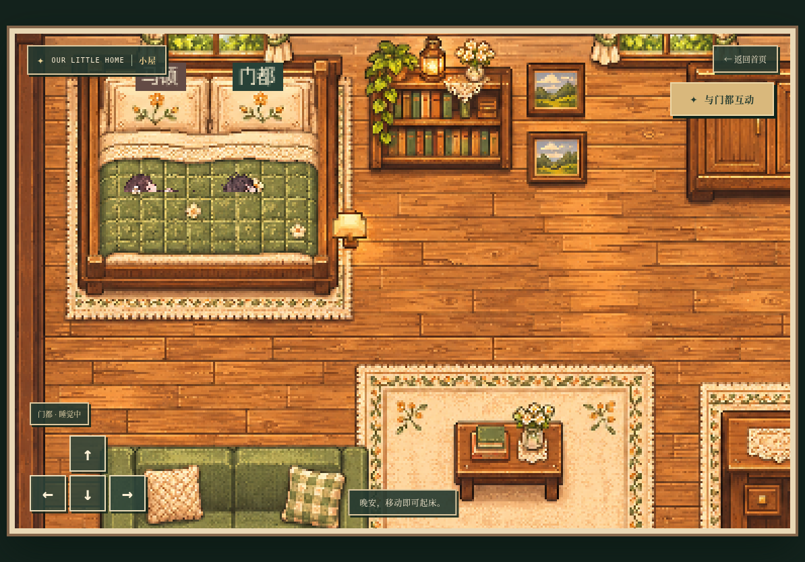
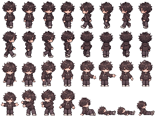

马硕与门都 · 实际游戏验收
你已认可 V3.1 人物方向。两位新版角色现在直接在 Phaser 游戏中移动、互动，室内与庭院画面保持原样。打开室内可玩预览即可用屏幕方向键移动并点「与门都互动」测试牵手、拥抱、坐下和睡觉；普通入口仍从庭院出生。下方都是实际浏览器游戏截图。
新旧人物尺寸对比
打开四方向站立／行走对比页。该页保留旧人物用于比较；主游戏已换成新版 40×60 人物。

新版人物已进游戏

目标细节与氛围

真实游戏中的互动





双人默认服装四方向与互动图集
每张 320×240 透明 PNG，单帧 40×60，共 32 帧。前 16 帧是获认可的四方向、各四帧行走；后 16 帧为坐下、起身、牵手、拥抱、躺下、睡觉、起床的可玩动作姿态。点击图集可检查原始像素。



完成与限制
| 已在游戏中运行 | 仍需美术制作或设备验收 |
|---|---|
| 新版双人四向站立／行走、牵手、拥抱、坐下／起身、睡觉／起床；原有 NPC 行为、寻路、碰撞、家具遮挡和场景切换 | 第二套服装、按真人照片逐帧精修的动作、真实 iPad Safari 横屏与持续触控验收 |
动作图集由原创 AI 辅助源图离线整理，当前是可玩的正式方向版本，尚非人工逐帧精修的最终人像。已验收的室内、庭院素材本轮没有重绘。